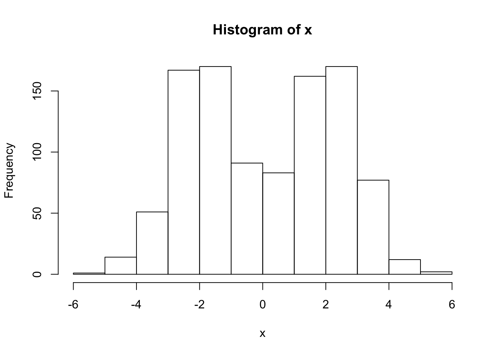
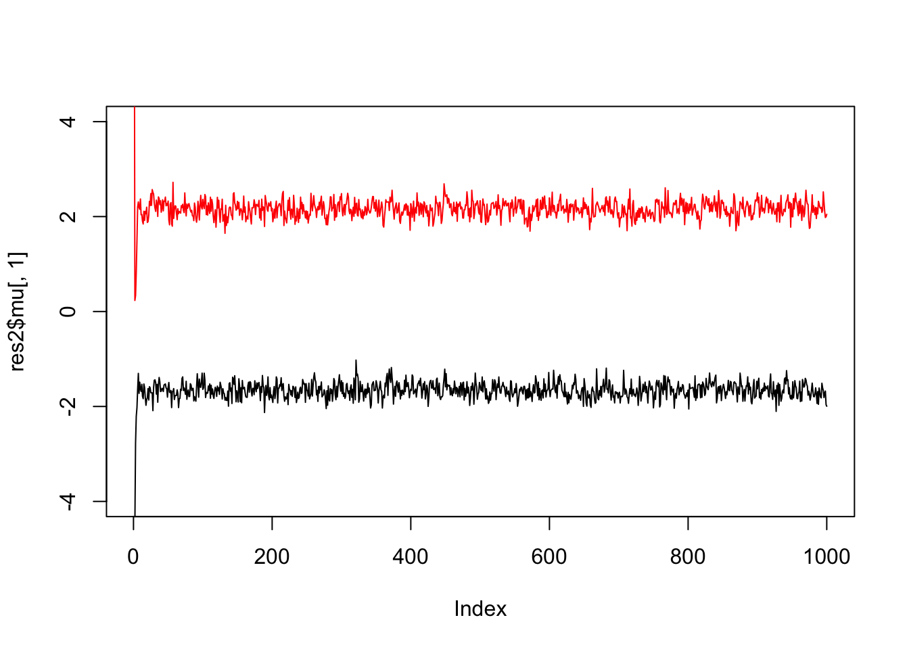
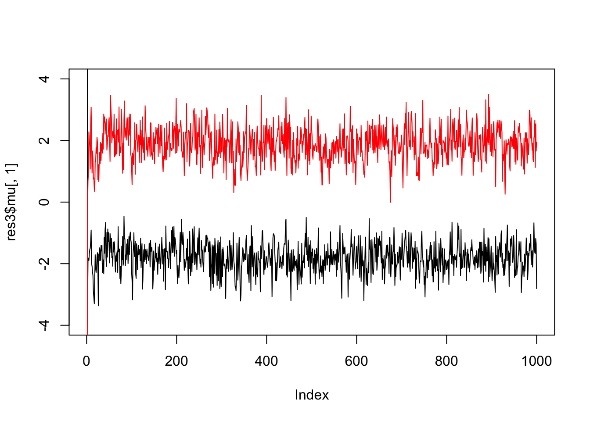

Gibbs Sampling for a mixture of normals
Matthew Stephens
2016-06-01
Last updated: 2016-09-04
Code version: ae24830869862c24142e77e47b6f25cea43e414c
Pre-requisites
Know what a Gibbs sampler is, and a mixture model is, and be familiar with Bayesian inference for a normal mean and for the two class problem.
Overview
We consider using Gibbs sampling to perform inference for a normal mixture model, \[X_1,\dots,X_n \sim f(\cdot)\] where \[f(\cdot) = \sum_{k=1}^K \pi_k N(\cdot; \mu_k,1).\] Here \(\pi_1,\dots,\pi_K\) are non-negative and sum to 1, and \(N(\cdot;\mu,\sigma^2)\) denotes the density of the \(N(\mu,\sigma^2)\) distribution.
Recall the latent variable representation of this model: \[\Pr(Z_j = k) = \pi_k\] \[X_j | Z_j = k \sim N(\mu_k,1)\]
To illustrate, let’s simulate data from this model:
set.seed(33)
# generate from mixture of normals
#' @param n number of samples
#' @param pi mixture proportions
#' @param mu mixture means
#' @param s mixture standard deviations
rmix = function(n,pi,mu,s){
z = sample(1:length(pi),prob=pi,size=n,replace=TRUE)
x = rnorm(n,mu[z],s[z])
return(x)
}
x = rmix(n=1000,pi=c(0.5,0.5),mu=c(-2,2),s=c(1,1))
hist(x)
Gibbs sampler
Suppose we want to inference for the parameters \(\mu,\pi\). That is, we want to sample from \(p(\mu,\pi | x)\). We can use a Gibbs sampler. However, to do this we have to augment the space to sample from \(p(z,\mu,\pi | x)\), not only \(p(\mu,\pi | x)\).
Here is the algorithm in outline:
- sample \(\mu\) from \(\mu | x, z, \pi\)
- sample \(\pi\) from \(\pi | x, z, \mu\)
- sample \(z\) from \(z | x, \pi, \mu\)
The point here is that all of these conditionals are easy to sample from.
Code
normalize = function(x){return(x/sum(x))}
#' @param x an n vector of data
#' @param pi a k vector
#' @param mu a k vector
sample_z = function(x,pi,mu){
dmat = outer(mu,x,"-") # k by n matrix, d_kj =(mu_k - x_j)
p.z.given.x = as.vector(pi) * dnorm(dmat,0,1)
p.z.given.x = apply(p.z.given.x,2,normalize) # normalize columns
z = rep(0, length(x))
for(i in 1:length(z)){
z[i] = sample(1:length(pi), size=1,prob=p.z.given.x[,i],replace=TRUE)
}
return(z)
}
#' @param z an n vector of cluster allocations (1...k)
#' @param k the number of clusters
sample_pi = function(z,k){
counts = colSums(outer(z,1:k,FUN="=="))
pi = gtools::rdirichlet(1,counts+1)
return(pi)
}
#' @param x an n vector of data
#' @param z an n vector of cluster allocations
#' @param k the number o clusters
#' @param prior.mean the prior mean for mu
#' @param prior.prec the prior precision for mu
sample_mu = function(x, z, k, prior){
df = data.frame(x=x,z=z)
mu = rep(0,k)
for(i in 1:k){
sample.size = sum(z==i)
sample.mean = ifelse(sample.size==0,0,mean(x[z==i]))
post.prec = sample.size+prior$prec
post.mean = (prior$mean * prior$prec + sample.mean * sample.size)/post.prec
mu[i] = rnorm(1,post.mean,sqrt(1/post.prec))
}
return(mu)
}
gibbs = function(x,k,niter =1000,muprior = list(mean=0,prec=0.1)){
pi = rep(1/k,k) # initialize
mu = rnorm(k,0,10)
z = sample_z(x,pi,mu)
res = list(mu=matrix(nrow=niter, ncol=k), pi = matrix(nrow=niter,ncol=k), z = matrix(nrow=niter, ncol=length(x)))
res$mu[1,]=mu
res$pi[1,]=pi
res$z[1,]=z
for(i in 2:niter){
pi = sample_pi(z,k)
mu = sample_mu(x,z,k,muprior)
z = sample_z(x,pi,mu)
res$mu[i,] = mu
res$pi[i,] = pi
res$z[i,] = z
}
return(res)
}Try the Gibbs sampler on the data simulated above. We see it quickly moves to a part of the space where the mean parameters are near their true values (-2,2).
res = gibbs(x,2)
plot(res$mu[,1],ylim=c(-4,4),type="l")
lines(res$mu[,2],col=2)
If we simulate data with fewer observations we should see more uncertainty
x = rmix(100,c(0.5,0.5),c(-2,2),c(1,1))
res2 = gibbs(x,2)
plot(res2$mu[,1],ylim=c(-4,4),type="l")
lines(res2$mu[,2],col=2)
And fewer observations still…
x = rmix(10,c(0.5,0.5),c(-2,2),c(1,1))
res3 = gibbs(x,2)
plot(res3$mu[,1],ylim=c(-4,4),type="l")
lines(res3$mu[,2],col=2)
And we can get credible intervals (CI) from these samples (discard the first few samples as “burn-in”).
For example, to get 90% posterior CIs for the mean parameters:
quantile(res3$mu[-(1:10),1],c(0.05,0.95)) 5% 95%
-2.644896 -1.004009 quantile(res3$mu[-(1:10),2],c(0.05,0.95)) 5% 95%
0.9400428 2.7773584 Session information
sessionInfo()R version 3.3.1 (2016-06-21)
Platform: x86_64-apple-darwin13.4.0 (64-bit)
Running under: OS X 10.11.5 (El Capitan)
locale:
[1] en_US.UTF-8/en_US.UTF-8/en_US.UTF-8/C/en_US.UTF-8/en_US.UTF-8
attached base packages:
[1] stats graphics grDevices utils datasets methods base
other attached packages:
[1] knitr_1.13
loaded via a namespace (and not attached):
[1] magrittr_1.5 formatR_1.4 tools_3.3.1
[4] htmltools_0.3.5 yaml_2.1.13 Rcpp_0.12.6
[7] stringi_1.1.1 rmarkdown_0.9.6.14 stringr_1.0.0
[10] digest_0.6.9 gtools_3.5.0 evaluate_0.9